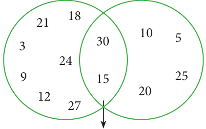
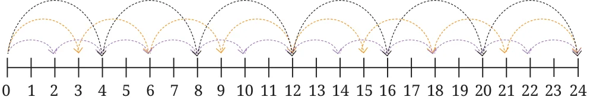
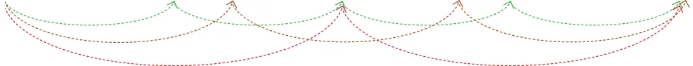
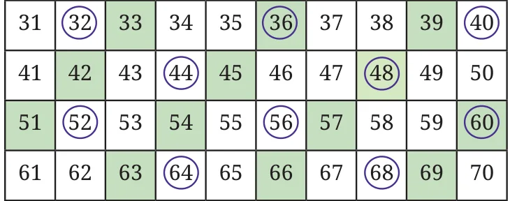

- At what number is ‘idli-vada’ said for the 10th time?
- If the game is played for the numbers 1 to 90, find out:
- How many times would the children say ‘idli’ (including the times they say ‘idli-vada’)?
- How many times would the children say ‘vada’ (including the times they say ‘idli-vada’)?
- How many times would the children say ‘idli-vada’?
- What if the game was played till Multiples Multiples 900? How would your answers of 3 of 5 change?

- Is this figure somehow related to the ‘idli-vada’ game? Hint: Imagine playing the game till 30. Draw the figure if the game is played till 60.
Let us now play the ‘idli-vada’ game of 3 and 5 with different pairs of numbers: Fig. 5.1
- 2 and 5,
- 3 and 7,
- 4 and 6. We will say ‘idli’ for multiples of the smaller number, ‘vada’ for multiples of the larger number and ‘idli-vada’ for common multiples. Draw a figure similar to Fig. 5.1 if the game is played up to 60. Yesterday, we played this game with two numbers. We ended up saying just ‘idli’ or ‘idli-vada’ Oh, what could and nobody said just ‘vada’! those numbers be!? One of the numbers was 4. Which of the following could be the other number: 2, 3, 5, 8, 10? Jump Jackpot Jumpy and Grumpy play a game.
- Grumpy places a treasure on some number. For example, he may place it on 24.
- Jumpy chooses a jump size. If he chooses 4, then he has to jump only on multiples of 4, starting at 0.
- Jumpy gets the treasure if he lands on the number where Grumpy placed it. Which jump sizes will get Jumpy to land on 24? If he chooses 4: Jumpy lands on \(4 \to 8 \to 12 \to 16 \to 20 \to 24 \to 28 \to\) ... Other successful jump sizes are 2, 3, 6, 8 and 12.


What about the jump of sizes 1 and 24? Yes, they also will land on 24. The numbers 1, 2, 3, 4, 6, 8, 12, 24 all divide 24 exactly. Recall that such numbers are called factors or divisors of 24. Grumpy increases the level of the game. Two treasures are kept on two different numbers. Jumpy has to choose a jump size and stick to it. Jumpy gets the treasures only if he lands on both the numbers with the chosen jump size. As before, Jumpy starts at 0. Grumpy has kept the treasures on 14 and 36. And, Jumpy chooses a jump size of 7. Will Jumpy land on both the treasures? Starting from 0, he jumps to \(7 \to 14 \to 21 \to 28 \to 35 \to 42\) … We see that he landed on 14 but
did not land on 36, so he does not get the treasure. What jump size should he have chosen? The factors of 14 are: 1, 2, 7, 14. So, these jump sizes will land on 14. The factors of 36 are: 1, 2, 3, 4, 6, 9, 12, 18 and 36. These jump sizes will land on 36. So, the jump sizes of 1 or 2 will land on both 14 and 36. Notice that 1 and 2 are the common factors of 14 and 36. The jump sizes using which both the treasures can be reached are the common factors of the two numbers where the treasures are placed. What jump size can reach both 15 and 30? There are multiple jump sizes possible. Try to find them all.
Look at the table below. What do you notice?

In the table,
- Is there anything common among the shaded numbers?
- Is there anything common among the circled numbers?
- Which numbers are both shaded and circled? What are these numbers called?